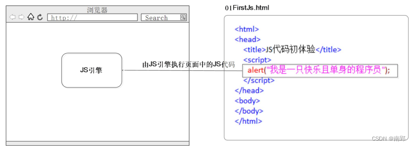
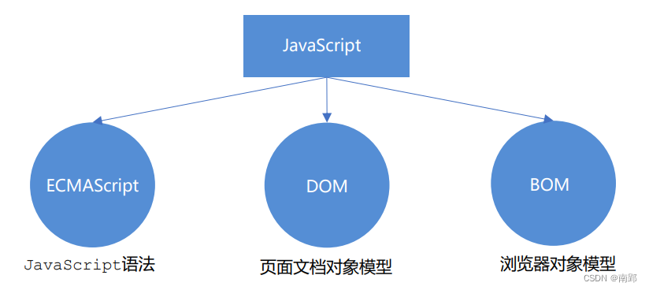
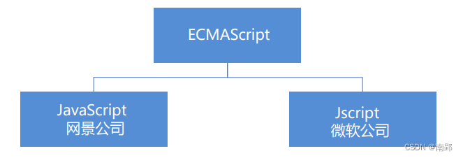
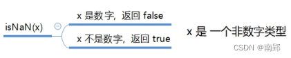
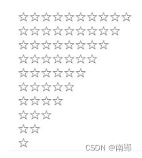
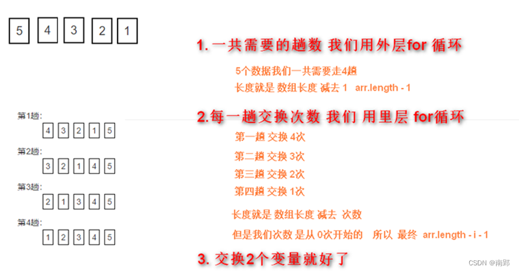
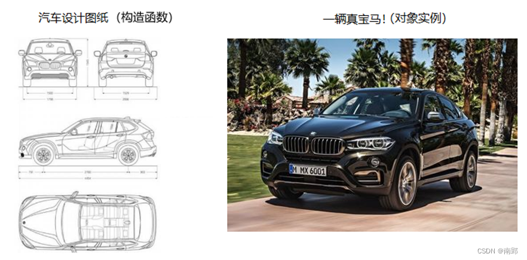
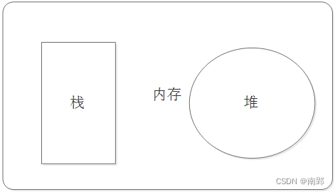
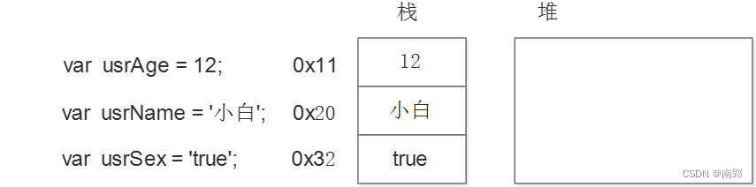
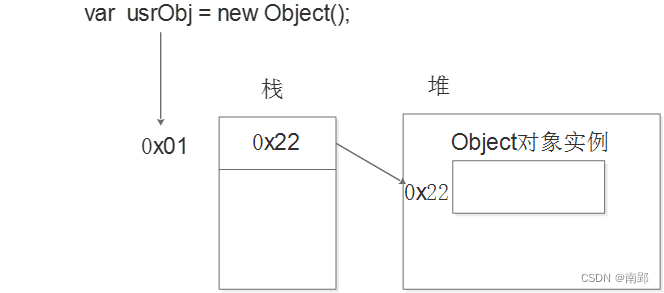

一、JavaScript简介
- JavaScript 是世界上最流行的语言之一，是一种运行在客户端的脚本语言 （Script 是脚本的意思）
- 脚本语言：不需要编译，运行过程中由 js 解释器( js 引擎）逐行来进行解释并执行
- 现在也可以基于 Node.js 技术进行服务器端编程
1. HTML/CSS/JS 的关系
HTML/CSS 标记语言–描述类语言
- HTML 决定网页结构和内容( 决定看到什么 )，相当于人的身体
- CSS 决定网页呈现给用户的模样( 决定好不好看 )， 相当于给人穿衣服、化妆
JS 脚本语言–编程类语言
- 实现业务逻辑和页面控制( 决定功能 )，相当于人的各种动作
2. 浏览器执行JS简介
浏览器分成两部分：渲染引擎和 JS 引擎
- 渲染引擎：用来解析HTML与CSS，俗称内核，比如 chrome 浏览器的 blink ，老版本的 webkit
- JS 引擎：也称为 JS 解释器。 用来读取网页中的JavaScript代码，对其处理后运行，比如 chrome 浏览器的 V8
浏览器本身并不会执行JS代码，而是通过内置 JavaScript 引擎(解释器) 来执行 JS 代码 。JS 引擎执行代码时逐行解释每一句源码（转换为机器语言），然后由计算机去执行，所以 JavaScript 语言归为脚本语言，会逐行解释执行。

3. JS的组成
JavaScript 包括 ECMAScript、DOM、BOM

3.1 ECMAScript
ECMAScript 是由ECMA 国际（ 原欧洲计算机制造商协会）进行标准化的一门编程语言，这种语言在万维网上应用广泛，它往往被称为 JavaScript 或 JScript，但实际上后两者是 ECMAScript 语言的实现和扩展。

ECMAScript：ECMAScript 规定了JS的编程语法和基础核心知识，是所有浏览器厂商共同遵守的一套JS语法工业标准。
更多参看 MDN
3.2 DOM——文档对象模型
文档对象模型（Document Object Model，简称DOM），是W3C组织推荐的处理可扩展标记语言的标准编程接口。 通过 DOM 提供的接口可以对页面上的各种元素进行操作（大小、位置、颜色等）。
3.3 BOM ——浏览器对象模型
浏览器对象模型 (Browser Object Model，简称BOM) ，提供了独立于内容的、可以与浏览器窗口进行互动的对象结构。通过BOM可以操作浏览器窗口，比如弹出框、控制浏览器跳转、获取分辨率等。
4. JS初体验
JS 有3种书写位置，分别为行内、内嵌和外部。
4.1 行内式
<input type="button" value="点我试试" onclink="javascript:alert('Hello World')" />- 可以将单行或少量JS代码写在HTML标签的事件属性中(以on开头的属性)，如： onclink
- 注意单双引号的使用：在HTML中我们推荐使用双引号，JS中我们推荐使用单引号
- 可读性差，在 HTML 中编入 JS 大量代码时，不方便阅读
- 特殊情况下使用
4.2 内嵌式
<script>
alert('Hello World!');
</script>- 可以将多行JS代码写到
<script>标签中 - 内嵌 JS 是学习时常用的方式
4.3 外部式
<script src="my.js"></script>- 利于HTML页面代码结构化，把单独JS代码独立到HTML页面之外，既美观，又方便
- 引用外部JS文件的script标签中间不可以写代码
- 适合于JS代码量比较大的情况
5. 注释
5.1 单行注释
// 单行注释- 快捷键
ctrl + /
5.2 多行注释
/*
多行注释
*/ - vscode中修改快捷键方式：vscode → 首选项按钮→ 键盘快捷方式 → 查找原来的快捷键 → 修改为新的快捷键 → 回车确认
- 快捷键
ctrl + shift + /
二、JavaScript 基本语法
1. 输入输出语句
为了方便信息的输入输出，JS中提供了一些输入输出语句，其常用的语句如下：
| 方法 | 说明 | 归属 |
|---|---|---|
| alert(msg); | 浏览器弹出警示框 | 浏览器 |
| console.log(msg); | 浏览器控制台打印输出信息 | 浏览器 |
| prompt(info); | 浏览看弹出输入框，用户可以输入 | 浏览器 |
注意：
alert()主要用来显示消息给用户console.log()用来给程序员自己看运行时的消息
2. 变量
- 变量是用于存放数据的容器，我们通过变量名获取数据，甚至数据可以修改。
- 本质：变量是程序在内存中申请的一块用来存放数据的空间。
2.1 变量的使用
变量在使用时分为两步： 1. 声明变量 2. 赋值
2.1.1 声明变量
var age;//声明一个名称为age的变量var是一个 JS关键字，用来声明变量( variable 变量的意思 )。使用该关键字声明变量后，计算机会自动为变量分配内存空间，不需要程序员管；age是程序员定义的变量名，我们要通过变量名来访问内存中分配的空间- 同时声明多个变量时，只需要写一个 var， 多个变量名之间使用英文逗号隔开。
var age = 10, name = 'zs', sex = 2;声明变量特殊情况：
| 情况 | 说明 | 结果 |
|---|---|---|
| var age; console.log(age); | 只声明，不赋值 | undefined |
| console.log(age); | 不声明 不赋值 直接使用 | 报错 |
| age = 10;console.log(age); | 不声明 只赋值 | 10 |
2.1.2 赋值
age = 10;//给 age 这个变量赋值为 10=用来把右边的值赋给左边的变量空间中- 变量值是程序员保存到变量空间里的值
- 一个变量被重新赋值后，它原有的值就会被覆盖，变量值将以最后一次赋的值为准。
2.2 变量的命名规范
- 由字母
(A-Z,a-z)，数字(0-9)，下划线(_)，美元符号($)组成； - 严格区分大小写。
var app;和var App;是两个变量； - 不能以数字开头；
- 不能是关键字，保留字。例如：
var,for,while - 遵循驼峰命名法。首字母小写，后面单词的首字母需要大写。例如：
myFirstName
3. 数据类型
- 变量是用来存储值的所在处，它们有名字和数据类型。变量的数据类型决定了如何将代表这些值的位存储到计算机的内存中。
- JavaScript 是一种弱类型或者说动态语言。这意味着不用提前声明变量的类型，在程序运行过程中，类型会被自动确定。
var age = 10; // 这是一个数字型
var areYouOk = '是的'; // 这是一个字符串- 在代码运行时，变量的数据类型是由 JS引擎 根据 = 右边变量值的数据类型 来判断的，运行完毕之后， 变量就确定了数据类型。
- JavaScript 拥有动态类型，同时也意味着相同的变量可用作不同的类型：
var x = 6; // x 为数字
var x = "Bill"; // x 为字符串3.1 简单数据类型
JS 把数据类型分为两类：
- 简单数据类型（Number,String,Boolean,Undefined,Null）
- 复杂数据类型 （object)
| 简单数据类型 | 说明 | 默认值 |
|---|---|---|
| Number | 数字型，包含整型值和浮点型值，如21，0.21 | 0 |
| Boolean | 布尔值类型，如true、false ，等价于1和0 | false |
| String | 字符串类型，如“张三” | ‘ ‘ |
| Undefined | var a; 声明了变量a但是没有赋值，此时a=undefined | undefined |
| Null | var a = null;声明了变量a为空值 | null |
3.1.1 数字型 Number
JavaScript 数字类型既可以用来保存整数值，也可以保存小数(浮点数）。
1. 数字型进制
最常见的进制有二进制、八进制、十进制、十六进制。
// 1.八进制数字序列范围：0~7
var num1 = 07; // 对应十进制的7
var num2 = 019; // 对应十进制的19
var num3 = 08; // 对应十进制的8
// 2.十六进制数字序列范围：0~9以及A~F
var num = 0xA;现阶段我们只需要记住，在JS中八进制前面加0，十六进制前面加 0x
2. 数字型范围
JavaScript中数值的最大和最小值
alert(Number.MAX_VALUE); // 1.7976931348623157e+308
alert(Number.MIN_VALUE); // 5e-3243. 数字型三个特殊值
alert(Infinity); //Infinity(无穷大)
alert(-Infinity); //-Infinity(无穷小)
alert(NaN); //Not a Number ,代表任何一个非数值4. isNaN

var userAge = 21;
var isOk = isNan(userAge);
console.log(isOk); //false,21不是一个非数字
var userName = "andy";
console.log(isNan(userName)); //true,"andy"是一个非数字
3.1.2 字符串型 String
1. 字符串引号嵌套
JS可以用 单引号嵌套双引号，或者用 双引号嵌套单引号（外双内单，外单内双）
var strMsg ='我是一个“高富帅”' //可以用 '' 包含 ""
var strMsg2 ="我是'高富帅'" //可以用"" 包含 ''2. 字符串转义符
类似HTML里面的特殊字符，字符串中也有特殊字符，我们称之为转义符。
转义符都是 \ 开头的，常用的转义符及其说明如下：
| 转义符 | 解释说明 |
|---|---|
\n |
换行符，n是newline |
\\ |
斜杠\ |
\' |
‘ 单引号 |
\'' |
‘’ 双引号 |
\t |
tab 缩进 |
\b |
空格，b是blank的意思 |
3. 字符串长度
字符串是由若干字符组成的，这些字符的数量就是字符串的长度。通过字符串的 length 属性可以获取整个字符串的长度。
//通过字符串的length属性可以获取整个字符串的长度
var strMsg = "我是高富帅！";
alert(strMsg.length); //显示64. 字符串拼接
- 多个字符串之间可以使用 + 进行拼接，其拼接方式为 字符串 + 任何类型 = 拼接之后的新字符串
- 拼接前会把与字符串相加的任何类型转成字符串，再拼接成一个新的字符串
//1 字符串相加
alert('hello' + ' ' + 'World'); //hello World
//2 数值字符串相加
alert('100' + '100'); //100100
//3 数值字符串+数值
alert('12'+ 12); //1212 自动转换为字符串
//4 数值+数值
alert(12 + 12); //243.1.3 布尔型 Boolean
- 布尔类型有两个值：true 和 false ，其中 true 表示真（对），而 false 表示假（错）。
- 布尔型和数字型相加的时候， true 的值为 1 ，false 的值为 0。
var flag = true;
console.log(flag + 1); // 2 true当加法来看当1来看，flase当0来看3.1.4 未定义 undefined
- 一个声明后没有被赋值的变量会有一个默认值 undefined ( 如果进行相连或者相加时，注意结果）
// 如果一个变量声明未赋值，就是undefined 未定义数据类型
var str;
console.log(str); //undefined
var variable = undefined;
console.log(variable + 'Pink'); //undefinedPink
console.log(variable + 18); //NaN - undefined 和 字符串 相加，会拼接字符串
- undefined 和 数字相加，最后结果是NaN
3.1.5 空值 null
- 一个声明变量给 null 值，里面存的值为空
var space = null;
console.log(space + 'pink'); //nullpink
console.llog(space + 1); // 1 3.2 获取变量的数据类型
typeof可用来获取检测变量的数据类型
var num = 18;
console.log(typeof num) // 结果 number | 类型 | 例 | 结果 |
|---|---|---|
| string | typeof “小白” | “string” |
| number | typeof 18 | “number” |
| boolean | typeof true | “boolean” |
| undefined | typeof undefined | “undefined” |
| null | typeof null | “object” |
3.3 数据类型转换
使用表单、prompt 获取过来的数据默认是字符串类型的，此时就不能直接简单的进行加法运算，而需要转换变量的数据类型。通俗来说，就是把一种数据类型的变量转换成另外一种数据类型。
我们通常会实现3种方式的转换：
- 转换为字符串类型
- 转换为数字型
- 转换为布尔型
3.3.1 转换为字符串型
| 方式 | 说明 | 案例 |
|---|---|---|
| toString() | 转成字符串 | var num = 1; alert(num.toString()); |
| String()强制转换 | 转成字符串 | var num = 1; alert(String(num)); |
| 加号拼接字符串 | 和字符串拼接的结果都是字符串 | var num =1; alert(num+’我是字符串’); |
- toString() 和 String() 使用方式不一样
- 三种转换方式，我们更喜欢用第三种加号拼接字符串转换方式，这一方式也称为隐式转换
3.3.2 转换为数字型（重点）
| 方式 | 说明 | 案例 |
|---|---|---|
| parseInt(string)函数 | 将string类型转成整数数值型 | parseInt(‘78’) |
| parseFloat(string)函数 | 将string类型转成浮点数数值型 | parseFloat(‘78.21’) |
| Number()强制转换函数 | 将string类型转换为数值型 | Number(‘12’) |
| js 隐式转换(- * /) | 利用算术运算隐式转换为数值型 | ‘12’-0 |
// 1.parseInt()
var age =prompt('请输入您的年龄');
consolo.log(parseInt(age)); //数字型18
consolo.log(parseInt('3.14')); //3取整
consolo.log(parseInt('3.94')); //3,不会四舍五入
consolo.log(parseInt('120px')); //120,会去掉单位
// 2.parseFloat()
console.log(parseFloat('3.14')); //3.14
consolo.log(parseFloat('120px')); //120,会去掉单位
// 3.利用Number(变量)
var str ='123';
console.log(Number(str));
console.log(Number('12'));
// 4.利用了算术运算 - * / 隐式转换
console.log('12'-0); // 12
console.log('123' - '120'); //3
console.log('123' * 1); // 123- 注意 parseInt 和 parseFloat ，这两个是重点
- 隐式转换是我们在进行算数运算的时候，JS自动转换了数据类型
3.3.3 转换为布尔型
| 方法 | 说明 | 案例 |
|---|---|---|
| Boolean()函数 | 其他类型转成布尔值 | Boolean(‘true’); |
- 代表空、否定的值会被转换为false，如 ‘ ‘ , 0, NaN , null , undefined
- 其余的值都会被被转换为true
4. 运算符
运算符（operator）也被称为操作符，是用于实现赋值、比较和执行算数运算等功能的符号
JavaScript 中常用的运算符有：
- 算数运算符
- 递增和递减运算符
- 比较运算符
- 逻辑运算符
- 赋值运算符
4.1 算术运算符
概念：算术运算使用的符号，用于执行两个变量或值的算术运算。
| 运算符 | 描述 | 实例 |
|---|---|---|
| + | 加 | 10 + 20 =30 |
| - | 减 | 10 - 20 =-10 |
| * | 乘 | 10 * 20 =200 |
| / | 除 | 10 / 20 =0.5 |
| % | 取余数（取模） | 返回出发的余数 9 % 2 =1 |
- 浮点数值的最高精度是17位小数，但在进行算数计算时其精确度远远不如整数
- 所以不要直接判断两个浮点数是否相等
var result = 0.1 +0.2; //结果不是0.3，0.30000000000000004
console.log(0.07 * 100); //结果不是7，而是7.0000000000000014.2 递增和递减运算符
递增（++）
递减（- -）
放在变量前面时，我们称为前置递增(递减)运算符
放在变量后面时，我们称为后置递增(递减)运算符
注意：递增和递减运算符必须和变量配合使用。
4.2.1 前置递增运算符
++num：前置递增，就是自加1
使用口诀:先自加，后返回值
var num = 10;
alert (++num + 10); // 214.2.2 后置递增运算符
num ++：后置递增，就是自加1
使用口诀:先返回原值，后自加
var num = 10;
alert(10 + num++); // 20小结：
- 单独使用时，运行结果相同，与其他代码联用时，执行结果会不同
- 后置：先原值运算，后自加（先人后己）
- 前置：先自加，后运算（先已后人）
- 开发时，大多使用后置递增/减，并且代码独占一行
4.3 比较运算符
比较运算符是两个数据进行比较时所使用的运算符，比较运算后，会返回一个布尔值(true / false)作为比较运算的结果。
| 运算符名称 | 说明 | 案例 | 结果 |
|---|---|---|---|
| < | 小于号 | 1 < 2 | true |
| > | 大于号 | 1 > 2 | false |
| >= | 大于等于号(大于或者等于) | 2 >= 2 | true |
| <= | 小于等于号(小于或者等于) | 3 <= 2 | false |
| == | 判等号(会转型) | 37 == 37 | true |
| != | 不等号 | 37 != 37 | false |
=== !== |
全等 要求值和数据类型都一致 | 37 === ‘37’ | false |
- 含有
=的（除===!==）会对变量进行隐式转换为数字型
4.4 逻辑运算符
逻辑运算符是用来进行布尔值运算的运算符，其返回值也是布尔值。
| 逻辑运算符 | 说明 | 案例 |
|---|---|---|
&& |
“逻辑与”，简称”与”and | true && false |
| ` | ` | |
! |
“逻辑非”，简称”非”not | ！true |
- 逻辑与：两边都是 true才返回 true，否则返回 false
- 逻辑或：两边都为 false 才返回 false，否则都为true
- 逻辑非：逻辑非（!）也叫作取反符，用来取一个布尔值相反的值，如 true 的相反值是 false
4.4.1 短路运算(逻辑中断)
原理：当有多个表达式（值）时,左边的表达式值可以确定结果时,就不再继续运算右边的表达式的值
注意：正常情况下，是布尔值参与逻辑运算。当值或表达式参与逻辑运算时，出现逻辑中断。
1. 逻辑与
- 语法：表达式1 && 表达式2
- 如果第一个表达式的值为真，则返回表达式2
- 如果第一个表达式的值为假，则返回表达式1
console.log(123 && 456); //456
console.log(0 && 456); //0
console.log(123 && 456 && 789); //7892. 逻辑或
- 语法：表达式1 || 表达式2
- 如果第一个表达式的值为真，则返回表达式1
- 如果第一个表达式的值为假，则返回表达式2
console.log(123 || 456); // 123
console.log(123 || 456 || 456 + 123); // 123
console.log(0 || 456 || 456 + 123); // 456
// 逻辑中断很重要 它会影响我们程序运行结果
var num = 0;
console.log(123 || num++);//123
console.log(num); // 0 num++未执行4.5 赋值运算符
概念：用来把数据赋值给变量的运算符。
| 赋值运算符 | 说明 | 案例 |
|---|---|---|
= |
直接赋值 | var usrName = ‘我是值’ |
+= ，-= |
加、减一个数后再赋值 | var age = 10； age+=5；//15 |
*=，/=，%= |
乘、除、取模后再赋值 | varage = 2; age*=5; //10 |
4.6 运算符优先级
| 优先级 | 运算符 | 顺序 |
|---|---|---|
| 1 | 小括号 | () |
| 2 | 一元运算符 | ++ – ！ |
| 3 | 算数运算符 | 先 * / 后 + - |
| 4 | 关系运算符 | >, >= , < , <= |
| 5 | 相等运算符 | == ，!=，=== ，!== |
| 6 | 逻辑运算符 | 先与后或 |
| 7 | 赋值运算符 | = |
| 8 | 逗号运算符 | ， |
| 1.一元运算符里面的逻辑非优先级很高 | ||
| 2.逻辑与 比 逻辑或 优先级高 |
console.log( 4 >= 6 || '人' != '阿凡达' && !(12 * 2 == 144) && true) // true
var a = 3 > 5 && 2 < 7 && 3 == 4;
console.log(a); //false
var b = 3 <= 4 || 3 > 1 || 3 != 2;
console.log(b); //true
var c = 2 === "2";
console.log(c); //false
var d = !c || b && a ;
console.log(d); //true
5. 流程控制
流程控制主要有三种结构，分别是顺序结构、分支结构和循环结构，这三种结构代表三种代码执行的顺序
5.0 断点调试
- 浏览器中按 F12–> sources –>找到需要调试的文件–>在程序的某一行设置断点(在行数点一下)
- 刷新浏览器
- Watch: 监视，通过watch可以监视变量的值的变化，非常的常用
- F11: 程序单步执行，让程序一行一行的执行，这个时候，观察watch中变量的值的变化
5.1 分支结构
JS 语言提供了两种分支结构语句：
- if 语句
- switch 语句
5.1.1 if 语句
1. if 语句
// 条件成立执行代码，否则什么也不做
if (条件表达式) {
//条件成立执行的代码语句
}2. if else 语句
// 条件成立，执行if里面代码，否则执行else里面的代码
if(条件表达式) {
//[如果]条件成立执行的代码
}
else {
//[否则]执行的代码
}案例：判断闰年
接收用户输入的年份，如果是闰年就弹出闰年，否则弹出是平年
算法：能被4整除且不能整除100的为闰年（如2004年就是闰年，1901年不是闰年）或者能够被 400 整除的就是闰年
var year = prompt('请输入年份');
if (year % 4 == 0 && year % 100 !=0 || year % 400 ==0) {
alert('这个年份是闰年');
}
else {
alert('这个年份是平年');
}3. if else if 语句
if(条件表达式1) {
语句1;
}
else if(条件表达式2) {
语句2;
}
else if(条件表达式3) {
语句3;
}
else {
//上述条件都不成立执行此处代码
}案例:接收用户输入的分数，根据分数输出对应的等级字母 A、B、C、D、E
其中：
90分(含)以上 ，输出：A
80分(含)~ 90 分(不含)，输出：B
70分(含)~ 80 分(不含)，输出：C
60分(含)~ 70 分(不含)，输出：D
60分(不含) 以下，输出： E
var score = prompt('请您输入分数:');
if (score >= 90) {
alert('宝贝，你是我的骄傲');
} else if (score >= 80) {
alert('宝贝，你已经很出色了');
} else if (score >= 70) {
alert('你要继续加油喽');
} else if (score >= 60) {
alert('孩子，你很危险');
} else {
alert('可以再努力点吗，你很棒，但还不够棒');
}5.1.2 三元表达式
如果表达式1为 true ，则返回表达式2的值；如果表达式1为 false，则返回表达式3的值
表达式1 ? 表达式2 : 表达式3;- 常用于比较几个数的大小
案例：数字补0
用户输入数字，如果数字小于10，则在前面补0，比如01，09
如果数字大于10，则不需要补，比如20
var num = prompt('请输入0~59之间的一个数字');
var result = num < 10 ? '0' + num : num
alert(result);5.1.3 switch 语句
switch 语句也是多分支语句，它用于基于不同的条件来执行不同的代码。当要针对变量设置一系列特定值的选项时，就可以使用 switch。
switch(表达式){
case value1:
//表达式等于 value1 时要执行的代码
break;
case value2:
//表达式等于value2 时要执行的代码
break;
default:
//表达式不等于任何一个value时要执行的代码
}- 关键字 switch 后面括号内可以是表达式或值， 通常是一个变量
- 关键字 case , 后跟一个选项的表达式或值，后面跟一个冒号
- switch 表达式的值会与结构中的 case 的值做比较
- 如果存在匹配全等(
===) ，则与该 case 关联的代码块会被执行，并在遇到 break 时停止，整个 switch 语句代码执行结束 - 如果所有的 case 的值都和表达式的值不匹配，则执行 default 里的代码
- 执行case 里面的语句时，如果没有break，则继续执行下一个case里面的语句
// 用户在弹出框里面输入一个水果，如果有就弹出该水果的价格， 如果没有该水果就弹出“没有此水果”
var fruit = prompt('请您输入查询的苹果');
switch (fruit) {
case '苹果':
alert('苹果的价格为3.5元/千克');
break;
case '香蕉':
alert('香蕉的价格为3元/千克');
break;
default:
alert('没有这种水果');
}switch 语句和 if else if 语句的区别：
- 一般情况下，它们两个语句可以相互替换
- switch…case 语句通常处理 case为比较确定值的情况， 而 if…else…语句更加灵活，常用于范围判断(大于、等于某个范围)
- switch 语句进行条件判断后直接执行到程序的条件语句，效率更高。而if…else 语句有几种条件，就得判断多少次。
- 当分支比较少时，if… else语句的执行效率比 switch语句高。
- 当分支比较多时，switch语句的执行效率比较高，而且结构更清晰。
5.2 循环结构
在Js 中，主要有三种类型的循环语句：
- for 循环
- while 循环
- do…while 循环
5.2.1 for 循环
for 循环主要用于把某些代码循环若干次，通常跟计数有关系。其语法结构如下：
for(初始化变量;条件表达式;操作表达式) {
//循环体
}执行过程：
- 初始化变量，初始化操作在整个 for 循环只会执行一次。
- 执行条件表达式，如果为true，则执行循环体语句，否则退出循环，循环结束。
- 执行操作表达式，此时第一轮结束。
- 第二轮开始，直接去执行条件表达式（不再初始化变量），如果为 true ，则去执行循环体语句，否则退出循环。
- 继续执行操作表达式，第二轮结束。
- 后续跟第二轮一致，直至条件表达式为假，结束整个 for 循环。
案例：
1. 要求用户输入班级人数，之后依次输入每个学生的成绩，最后打印出该班级总的成绩以及平均成绩。
var num = prompt('请输入班级总的人数:'); // num 班级总的人数
var sum = 0; // 总成绩
var average = 0; // 平均成绩
for (var i = 1; i <= num; i++) {
var score = prompt('请输入第' + i + '个学生的成绩');
//这里接收的是str，必须转换为数值
sum = sum + parseFloat(score);
}
average = sum / num;
alert('班级总的成绩是：' + sum);
alert('班级总的平均成绩是：' + average);2. 一行打印五颗星星
var star = '';
for (var i = 1; i <= 5; i++) {
star += '☆';
}
console.log(star);5.2.2 双重 for 循环
循环嵌套是指在一个循环语句中再定义一个循环语句的语法结构，例如在for循环语句中，可以再嵌套一个for 循环，这样的 for 循环语句我们称之为双重for循环。
for(外循环的初始;外循环的条件;外形循环的操作表达式){
for(内循环的初始;内循环的条件;内循环的操作表达式){
需执行的代码;
}
}- 内层循环可以看做外层循环的语句
- 内层循环执行的顺序也要遵循 for 循环的执行顺序
- 外层循环执行一次，内层循环要执行全部次数
案例：
1. 打印五行五列星星
核心：
- 内层循环负责一行打印五个星星
- 外层循环负责打印五行
var star = '';
for(var j = 1;j<=5;j++)
{
for (var i = 1; i <= 5; i++)
{
star += '☆'
}
//每次满5个星星就加一次换行
star +='\n'
}
console.log(star);2. 打印倒三角形

- 一共有10行，但是每行的星星个数不一样，因此需要用到双重 for 循环
- 外层的 for 控制行数 i ，循环10次可以打印10行
- 内层的 for 控制每行的星星个数 j
- 核心算法： 每一行星星的个数： j = i ; j <= 10; j++
- 每行打印完毕后，都需要重新换一行
var star = '';
for (var i = 1; i <= 10; i++) {
for (var j = i; j <= 10; j++) {
star += '☆';
}
star += '\n';
}
console.log(star);3. 打印九九乘法表
- 一共有9行，但是每行的个数不一样，因此需要用到双重 for 循环
- 外层的 for 循环控制行数 i ，循环9次 ，可以打印 9 行
- 内层的 for 循环控制每行公式 j
- 核心算法：每一行 公式的个数正好和行数一致， j <= i;
- 每行打印完毕，都需要重新换一行
- 把公式用 i 和 j 替换
var str = '';
for (var i = 1; i <= 9; i++) { // 外层for控制 行数 9行
for (var j = 1; j <= i; j++) { // j 控制列数 列数和行数是一样的 j <= i
str += j + " × " + i + " = " + i * j + '\t';
}
str += '\n';
}
console.log(str);5.2.3 while 循环
while 语句可以在条件表达式为真的前提下，循环执行指定的一段代码，直到表达式不为真时结束循环。
while(条件表达式){
//循环体代码
}执行过程：
- 先执行条件表达式，如果结果为 true，则执行循环体代码；如果为 false，则退出循环，执行后面代码
- 执行循环体代码
- 循环体代码执行完毕后，程序会继续判断执行条件表达式，如条件仍为true，则会继续执行循环体，直到循环条件为 false 时，整个循环过程才会结束
注意：
- 使用 while 循环时一定要注意，它必须要有退出条件，否则会称为死循环
- while 循环和 for 循环的不同之处在于 while 循环可以做较为复杂的条件判断，比如判断用户名和密码
案例：
弹出一个提示框， 你爱我吗？ 如果输入我爱你，就提示结束，否则，一直询问。
var str = prompt('你爱我吗');
while (str !== '我爱你') {
str = prompt('你爱我吗');
}
alert('结束');5.2.4 do while 循环
do… while 语句其实是 while 语句的一个变体。该循环会先执行一次代码块，然后对条件表达式进行判断，如果条件为真，就会重复执行循环体，否则退出循环。
do {
//循环体代码-条件表达式为true的时候重复执行循环一代码
} while(条件表达式);执行过程：
- 先执行一次循环体代码
- 再执行表达式，如果结果为true，则继续执行循环体代码，如果为false，则退出循环，继续执行后面的代码
注意：
- 先执行再判断循环体，所以 do… while 循环语句至少会执行一次循环体代码
案例：
弹出一个提示框， 你爱我吗？ 如果输入我爱你，就提示结束，否则，一直询问。
do {
var str = prompt('你爱我吗？');
} while (str !== '我爱你');
alert('结束');==循环小结：==
- 三个循环很多情况下都可以相互替代使用
- 如果是用来计次数，跟数字相关的，三者使用基本相同，但是我们更喜欢用 for
- while 和 do…while 可以做更复杂的判断条件，比 for 循环灵活一些
- 实际工作中，我们更常用for 循环语句，它写法更简洁直观， 所以这个要重点学习
5.2.5 continue 和 break
continue关键字用于立即跳出本次循环，继续下一次循环（本次循环体中 continue 之后的代码就会少执行一次）。
例如，吃5个包子，第3个有虫子，就扔掉第3个，继续吃第4个第5个包子
for (var i = 1; i <= 5; i++) {
if (i == 3) {
console.log('这个包子有虫子，扔掉');
continue; // 跳出本次循环，跳出的是第3次循环
}
console.log('我正在吃第' + i + '个包子呢');
}break关键字用于立即跳出整个循环
例如，吃5个包子，吃到第3个发现里面有半个虫子，其余的也不吃了
for (var i = 1; i <= 5; i++) {
if (i == 3) {
break; // 直接退出整个for 循环，跳到整个for下面的语句
}
console.log('我正在吃第' + i + '个包子呢');
}5.2.6 循环作业
1.打印出正金字塔 （1357）
for (var i = 1; i <= 4; i++) {
for (var k = 1; k <= 4 - i; k++) {
document.write(' ');
}
for (j = 1; j <= 2 * i - 1; j++) {
document.write('☆');
}
document.write('<br/>');
}2.打印出倒金字塔 （7531）
for (var i = 4; i >= 1; i--) {
for (var k = 1; k <= 4 - i; k++) {
document.write(' ');
}
for (j = 1; j <= 2 * i - 1; j++) {
document.write('☆');
}
document.write('<br/>');
}3. 穷举：从1遍历到无穷大，找出符合条件的
需求 ：有一群人，如果3个人站一排多出一人；如果4个人站一排多出来2个人；如果5人一排多出3人。
请问：这群人的数量
var i = 1;
while (i <= Infinity) {
if (i % 3 == 1 && i % 4 == 2 && i % 5 == 3) {
alert(i);
break;
}
i++;
}4. 简易ATM
var money = 100;
var num = prompt('请输入您要的操作：\n1.存钱\n2.取钱\n3.显示余额\n4.退出');
//该处添加while是为了在进行一个操作（如存钱）后，可以继续执行其他操作
while (money >= 0) {
if (num == '1') {
var msg = prompt('请输入需要存的金额');
msg = parseInt(msg);
money = money + msg;
alert('余额' + money);
}
if (num == '2') {
var msg = prompt('请输入需要取的金额');
msg = parseInt(msg);
money = money - msg;
alert('余额' + money);
}
if (num == '3') {
alert('余额' + money);
}
if (num == '4') {
// num = false;
break;
}
num = prompt('操作:\n1.存钱\n2.取钱\n3.显示余额\n4.退出');
}三、数组
数组(Array)是指一组数据的集合，其中的每个数据被称作元素，在数组中可以存放任意类型的元素。数组是一种将一组数据存储在单个变量名下的优雅方式。
//普通变量一次只能存储一个值
var num = 10;
//数组一次可以存储多个值
var arr =[1,2,3,4,5];1. 创建数组
JavaScript 中创建数组有两种方式：
- 利用 new 创建数组
- 利用数组字面量创建数组
1.1 利用 new 创建数组
var 数组名 = new Array();
var arr = new Array(); //创建一个新的空数组- 这种方式暂且了解，等学完对象再看
- 注意
Array()，A要大写
1.2 利用数组字面量创建数组
// 1.利用数组字面量方式创建空的数组
var 数组名 =[];
// 2.使用数组字面量方式创建带初始值的数组
var 数组名 =['小白'，12，true，28.9];- 数组的字面量是方括号
[] - 声明数组并赋值称为数组的初始化
- 这种字面量方式也是我们以后最多使用的方式
2. 遍历数组
索引 (下标) ：用来访问数组元素的序号（数组下标从 0 开始）
我们可以通过 for 循环索引遍历数组中的每一项
// 数组索引访问数组中的元素
var arr = ['red','green', 'blue'];
console.log(arr[0]) // red
console.log(arr[1]) // green
console.log(arr[2]) // blue
// for循环遍历数组
var arr = ['red','green', 'blue'];
for (var i = 0; i < arr.length; i++){
console.log(arrStus[i]);
}2.1 数组的长度
使用“数组名.length”可以访问数组元素的数量（数组长度）
var arrStus = [1,2,3];
alert(arrStus.length); // 3注意：
- 此处数组的长度是数组元素的个数 ，不要和数组的索引号混淆
- 当我们数组里面的元素个数发生了变化，这个 length 属性跟着一起变化
2.2 案例
1. 求数组[2,6,1,77,52,25,7]中的最大值
- 声明一个保存最大元素的变量 max。
- 默认最大值可以取数组中的第一个元素。
- 遍历这个数组，把里面每个数组元素和 max 相比较。
- 如果这个数组元素大于max 就把这个数组元素存到 max 里面，否则继续下一轮比较。
- 最后输出这个 max。
var arr = [2, 6, 1, 77, 52, 25, 7];
var max = arr[0];
for (var i = 1; i < arr.length; i++) {
if (arr[i] > max) {
max = arr[i];
}
}
console.log('最大值为' + max);3. 数组中新增元素
3.1 通过修改 length 长度新增数组元素
- 可以通过修改 length 长度来实现数组扩容的目的
- length 属性是可读写的
var arr = ['red', 'green', 'blue', 'pink'];
arr.length = 7;
console.log(arr);
console.log(arr[4]);
console.log(arr[5]);
console.log(arr[6]);其中索引号是 4，5，6 的空间没有给值，就是声明变量未给值，默认值就是 undefined
3.2 通过修改数组索引新增数组元素
- 可以通过修改数组索引的方式追加数组元素
- 不能直接给数组名赋值，否则会覆盖掉以前的数据
- 这种方式也是我们最常用的一种方式
var arr = ['red', 'green', 'blue', 'pink'];
arr[4] = 'hotpink';
console.log(arr);案例：
将数组 [2, 0, 6, 1, 77, 0, 52, 0, 25, 7] 中大于等于 10 的元素选出来，放入新数组
- 声明一个新的数组用于存放新数据。
- 遍历原来的数组，找出大于等于 10 的元素。
- 依次追加给新数组 newArr。
var arr = [2, 0, 6, 1, 77, 0, 52, 0, 25, 7];
var newArr = [];
for (var i = 0; i < arr.length; i++) {
if (arr[i] >= 10) {
// 给新数组
newArr[newArr.length] = arr[i];
}
}
console.log(newArr);4. 数组案例
4.1 删除指定数组元素
将数组[2, 0, 6, 1, 77, 0, 52, 0, 25, 7]中的 0 去掉后，形成一个不包含 0 的新数组。
var arr = [2, 0, 6, 1, 77, 0, 52, 0, 25, 7];
var newArr = []; // 空数组的默认的长度为 0
// 定义一个变量 i 用来计算新数组的索引号
for (var i = 0; i < arr.length; i++) {
// 找出大于 10 的数
if (arr[i] != 0) {
// 给新数组
// 每次存入一个值，newArr长度都会 +1
newArr[newArr.length] = arr[i];
}
}
console.log(newArr);4.2 翻转数组
将数组 [‘red’, ‘green’, ‘blue’, ‘pink’, ‘purple’] 的内容反过来存放
// 把旧数组索引号的第4个取过来(arr.length - 1),给新数组索引号第0个元素(newArr.length)
var arr = ['red','green','blue','pink','purple'];
var newArr = [];
for (var i = arr.length -1; i>=0; i-- {
newArr[newArr.length] = arr[i];
}
console.log(newArr);4.3 冒泡排序
冒泡排序：是一种算法，把一系列的数据按照一定的顺序进行排列显示(从小到大或从大到小）。
将数组 [5, 4, 3, 2, 1]中的元素按照从小到大的顺序排序，输出： 1，2，3，4，5（考虑此极端情况，即所有数顺序有误）

var arr = [5,4,3,2,1];
for (var i = 0; i < arr.length-1; i++){ //表示要重复从头开始比较4趟
for (var j = 0; j < arr.length - i - 1; j++){
//里层循环管每一趟比较的次数
//前一个和后面一个数组元素相比较
if(arr[j] > arr[j+1]){
var temp = arr[j];
arr[j] = arr[j+1];
arr[j+1] = temp;
}
}
}
console.log(arr);四、函数
函数：就是封装了一段可被重复调用执行的代码块。通过此代码块可以实现大量代码的重复使用。
1. 函数的使用
函数在使用时分为两步：声明函数和调用函数
1.1 声明函数
1.1.1 自定义函数方式 (命名函数)
利用函数关键字 function 自定义函数方式。
由于函数一般是为了实现某个功能才定义的， 所以通常我们将函数名命名为动词，比如 getSum
函数名();
function 函数名() {
//函数体代码
}- 因为有名字，所以也被称为命名函数
- 调用函数的代码既可以放到声明函数的前面，也可以放在声明函数的后面
1.1.2 函数表达式方式 (匿名函数)
利用函数表达式方式的写法如下：
// 这是函数表达式写法，匿名函数后面跟分号结束
var fn = function(){...};
// 调用时以变量名fn调用
fn();- 因为函数没有名字，所以也称为匿名函数
- 这个fn 里面存储的是一个函数
- 函数调用的代码必须写到函数体后面
1.2 调用函数
函数名(); //通过调用函数名来执行函数体代码- 调用的时候千万不要忘记添加小括号
- 口诀：函数不调用，自己不执行
2. 函数的参数
2.1 形参和实参
在声明函数时，可以在函数名称后面的小括号中添加一些参数，这些参数被称为形参，而在调用该函数时，同样也需要传递相应的参数，这些参数被称为实参。
| 参数 | 说明 |
|---|---|
| 形参 | 形式上的参数 函数定义时传递的参数 当前并不知道是什么（默认值是undefined） |
| 实参 | 实际上的参数 函数调用时传递的参数 实参是传递给形参的 |
参数的作用 : 在函数内部某些值不能固定，我们可以通过参数在调用函数时传递不同的值进去
// 带参数的函数声明
function 函数名(形参1, 形参2 , 形参3...) { // 可以定义任意多的参数，用逗号分隔
// 函数体
}
// 带参数的函数调用
函数名(实参1, 实参2, 实参3...); 2.2 形参和实参个数不匹配
| 参数个数 | 说明 |
|---|---|
| 实参个数等于形参个数 | 输出正确结果 |
| 实参个数多于形参个数 | 只取到形参的个数 |
| 实参个数小于形参个数 | 多的形参定义为undefined，结果为NaN |
function sum(num1, num2) {
console.log(num1 + num2);
}
sum(100, 200); // 300，形参和实参个数相等，输出正确结果
sum(100, 400, 500, 700); // 500，实参个数多于形参，只取到形参的个数
sum(200); // 实参个数少于形参，多的形参定义为undefined，结果为NaN3. 函数的返回值
3.1 return语句
有的时候，我们会希望函数将值返回给调用者，此时通过使用 return 语句就可以实现。
// 声明函数
function 函数名（）{
...
return 需要返回的值;
}
// 调用函数
函数名(); // 此时调用函数就可以得到函数体内return 后面的值- 在使用 return 语句时，函数会停止执行，并返回指定的值
- 如果函数没有 return ，返回的值是 undefined
3.2 return 终止函数
return 语句之后的代码不被执行
function add(num1，num2) {
return num1 + num2; // 注意：return 后的代码不执行
alert('我不会被执行，因为前面有 return');
}
var resNum = add(21,6); // 调用函数，传入两个实参，并通过 resNum 接收函数返回值
alert(resNum); // 273.3 return 的返回值
return 只能返回一个值。如果用逗号隔开多个值，以最后一个为准
function add(num1，num2) {
return num1, num2;
}
var resNum = add(21, 6); // 调用函数
alert(resNum); // 63.4 break、continue、return 的区别
break： 结束当前循环体(如 for、while)continue：跳出本次循环，继续执行下次循环(如for、while)return：不仅可以退出循环，还能够返回 return 语句中的值，同时还可以结束当前的函数体内的代码
4. arguments的使用
当我们不确定有多少个参数传递的时候，可以用 arguments 来获取。
- arguments 实际上是所有函数中的一个内置对象，arguments 对象中存储了传递的所有实参。
- arguments 展示形式是一个伪数组，因此可以进行遍历。伪数组具有以下特点：
- 具有 length 属性
- 按索引方式储存数据
- 不具有数组的 push , pop 等方法
例如：利用函数求任意个数的最大值
function maxValue() {
var max = arguments[0];
for (var i = 1; i < arguments.length; i++) {
if (arguments[i] > max) {
max = arguments[i];
}
}
return max;
}
console.log(maxValue(2, 4, 5, 9)); // 9
console.log(maxValue(12, 4, 9)); // 125. 函数调用另外一个函数
因为每个函数都是独立的代码块，用于完成特殊任务，因此经常会用到函数相互调用的情况。
例：用户输入年份，输出当前年份2月份的天数，如果是闰年，则2月份是 29天， 如果是平年，则2月份是 28天
function backDay() {
var year = prompt('请您输入年份:');
if (isRun(year)) { //调用函数需要加小括号
alert('你输入的' + year + '是闰年，2月份有29天');
} else {
alert('您输入的' + year + '不是闰年，2月份有28天');
}
}
backDay();
//判断是否是闰年的函数
function isRun(year) {
var flag = false;
if (year % 4 === 0 && year % 100 !== 0 || year % 400 === 0) {
flag = true;
}
return flag;
}6. 函数作业
做一个简易计算器
var tan = prompt('1.加法运算\n2.减法运算\n3.乘法运算\n4.除法运算\n5.退出');
function jisuan(shuzi) {//封装计算功能
var num1 = parseInt(prompt('请输入第一个数：'));
var num2 = parseInt(prompt('请输入第二个数：'));
var result = 0;
switch (parseInt(shuzi)) {
case 1:
result = num1 + num2;
break;
case 2:
result = num1 - num2;
break;
case 3:
result = num1 * num2;
break;
case 4:
result = num1 / num2;
break;
}
alert(result);
tan = prompt('1.+运算\n2.减法运算\n3.乘法运算\n4.除法运算\n5.退出');
}
while (1 == 1) {
if (tan == '1') {
jisuan(tan);
}
if (tan == '2') {
jisuan(tan);
}
if (tan == '3') {
jisuan(tan);
}
if (tan == '4') {
jisuan(tan);
}
if (tan == '5') {
break;
}
}五、作用域
通常来说，一段程序代码中所用到的名字并不总是有效和可用的，而限定这个名字的可用性的代码范围就是这个名字的作用域。作用域的使用提高了程序逻辑的局部性，增强了程序的可靠性，减少了名字冲突。
JavaScript (ES6前) 中的作用域有两种：
- 全局作用域
- 局部作用域(函数作用域)
1. 作用域
1.1 全局作用域
作用于所有代码执行的环境(整个 script 标签内部)或者一个独立的 js 文件
1.2 局部（函数）作用域
作用于函数内的代码环境，就是局部作用域。 因为跟函数有关系，所以也称为函数作用域
1.3 JS 没有块级作用域
- 块作用域由
{}包括 - 在其他编程语言中（如 java、c#等），在 if 语句、循环语句中创建的变量，仅仅只能在本 if 语句、本循环语句中使用，如下面的Java代码：
if(true){
int num = 123;
System.out.println(num); // 123
}
System.out.println(num); // 报错JS 中没有块级作用域(在ES6之前)
if(true){
var num = 123;
console.log(num); //123
}
console.log(num); //1232. 变量的作用域
在JavaScript中，根据作用域的不同，变量可以分为两种：
- 全局变量
- 局部变量
2.1 全局变量
在全局作用域下声明的变量叫做全局变量（在函数外部定义的变量）
- 全局变量在代码的任何位置都可以使用
- 在全局作用域下 var 声明的变量 是全局变量
- 特殊情况下，在函数内不使用 var 声明的变量也是全局变量（不建议使用）
2.2 局部变量
在局部作用域下声明的变量叫做局部变量（在函数内部定义的变量）
- 局部变量只能在该函数内部使用
- 在函数内部 var 声明的变量是局部变量
- 函数的形参实际上就是局部变量
2.3 区别
全局变量：在任何一个地方都可以使用，只有在浏览器关闭时才会被销毁，因此比较占内存
局部变量：只在函数内部使用，当其所在的代码块被执行时，会被初始化；当代码块运行结束后，就会被销毁，因此更节省内存空间
3. 作用域链
- 只要是代码，就至少有一个作用域
- 写在函数内部的叫局部作用域
- 如果函数中还有函数，那么在这个作用域中就又可以诞生一个作用域
- 根据在内部函数可以访问外部函数变量的这种机制，用链式查找决定哪些数据能被内部函数访问，就称作作用域链
function f1() {
var num = 123;
function f2() {
console.log( num );
}
f2();
}
var num = 456;
f1(); //123作用域链：采取就近原则的方式来查找变量最终的值。
六、预解析
JavaScript 代码是由浏览器中的 JavaScript 解析器来执行的。JavaScript 解析器在运行代码的时候分为两步：预解析和代码执行。
- 预解析：js引擎会把js里面所有的
var还有function提升到当前作用域的最前面 - 代码执行：从上到下执行JS语句
预解析只会发生在通过 var 定义的变量和 function 上。学习预解析能够让我们知道为什么在变量声明之前访问变量的值是 undefined，为什么在函数声明之前就可以调用函数。
1. 变量预解析(变量提升)
变量的声明会被提升到当前作用域的最上面，变量的赋值不会提升。
console.log(num); // 结果是undefined
var num = 10;
//相当于执行了以下代码
var num; // 变量声明提升到当前作用域最上面
console.log(num);
num = 10; // 变量的赋值不会提升2. 函数预解析(函数提升)
函数的声明会被提升到当前作用域的最上面，但是不会调用函数。
fn(); //11
function fn() {
console.log('11');
}2.1 解决函数表达式声明调用问题
对于函数表达式声明调用需要记住：函数表达式调用必须写在函数声明的下面
// 匿名函数(函数表达式方式):若我们把函数调用放在函数声明上面
fn();
var fn = function() {
console.log('22'); // 报错
}
//相当于执行了以下代码
var fn;
fn(); //fn没赋值，没这个，报错
fn = function() {
console.log('22'); //报错
}3. 预解析练习
// 练习1
var num = 10;
fun(); // 最终结果是 undefined
function fun() {
console.log(num);
var num = 20;
}
//相当于执行了以下操作
var num;
function fun() {
var num;
console.log(num);
num = 20;
}
num = 10;
fun();// 练习2
var num = 10;
function fn(){
console.log(num);
var num = 20;
console.log(num);
}
fn(); // 最终结果是 undefined 20
//相当于执行了以下操作
var num;
function fn(){
var num;
console.log(num);
num = 20;
console.log(num);
}
num = 10;
fn();// 练习3
var a = 18;
f1(); // 最终结果是 undefined 9
function f1() {
var b = 9;
console.log(a);
console.log(b);
var a = '123';
}
//相当于执行了以下操作
var a;
function f1() {
var b;
var a
b = 9;
console.log(a); //undefined
console.log(b); //9
a = '123';
}
a = 18;
f1();// 练习4
f1(); // 9 9 9
console.log(c); // 9
console.log(b); // 9
console.log(a); // undefined
function f1() {
var a = b = c = 9;
// 相当于 var a = 9; b = 9;c = 9; b和c的前面没有var声明,当全局变量看
// 集体声明应为 var a = 9,b = 9,c = 9;
console.log(a);
console.log(b);
console.log(c);
}
//相当于执行了以下操作
function f1() {
var a;
a = b = c = 9;
console.log(a); //9
console.log(b); //9
console.log(c); //9
}
f1();
console.log(c); //9
console.log(b); //9
console.log(a); //报错 a是局部变量七、对象
在 JavaScript 中，对象是一组无序的相关属性和方法的集合，所有的事物都是对象，例如字符串、数值、数组、函数等。
对象是由属性和方法组成的：
- 属性：事物的特征（常用名词）
- 方法：事物的行为（常用动词）
1. 创建对象
在 JavaScript 中，现阶段我们可以采用三种方式创建对象（object）：
- 利用字面量创建对象
- 利用 new Object创建对象
- 利用构造函数创建对象
1.1 利用字面量创建对象
对象字面量：就是花括号 {} 里面包含了表达这个具体事物（对象）的属性和方法
{} 里面采取键值对的形式表示
- 键：相当于属性名
- 值：相当于属性值，可以是任意类型的值（数字类型、字符串类型、布尔类型，函数类型等）
var star = {
name : 'pink',
age : 18,
sex : '男',
sayHi : function(){
alert('大家好啊~');
}
};
// 多个属性或者方法中间用逗号隔开
// 方法冒号后面跟的是一个匿名函数对象的调用
- 对象里面的属性调用 : ==对象.属性名== ，这个小点 . 就理解为“ 的 ”
- 对象里面属性的另一种调用方式 : ==对象[‘属性名’]==，注意方括号里面的属性必须加引号，我们后面会用
- 对象里面的方法调用：==对象.方法名()== ，注意这个方法名字后面一定加括号
console.log(star.name) // 调用名字属性
console.log(star['name']) // 调用名字属性
star.sayHi(); // 调用 sayHi 方法,注意，一定不要忘记带后面的括号变量、属性、函数、方法总结
- 变量：单独声明赋值，单独存在
- 属性：对象里面的变量称为属性，不需要声明，用来描述该对象的特征
- 函数：单独存在的，通过==“函数名()”==的方式就可以调用
- 方法：对象里面的函数称为方法，方法不需要声明，使用==“对象.方法名()”==的方式就可以调用，方法用来描述该对象的行为和功能。
1.2 利用 new Object 创建对象
跟之前的 new Array() 原理一致：var 对象名 = new Object();
使用的格式：对象.属性 = 值
var obj = new Object(); //创建了一个空的对象
obj.name = '张三';
obj.age = 18;
obj.sex = '男';
obj.sayHi = function() {
console.log('hi~');
}
//1.我们是利用等号赋值的方法添加对象
//2.每个属性和方法之间用分号结束
console.log(obj.name);
console.log(obj['sex']);
obj.sayHi();1.3 利用构造函数创建对象
构造函数 ：是一种特殊的函数，主要用来初始化对象，即为对象成员变量赋初始值，它总与 new 运算符一起使用。我们可以把对象中一些公共的属性和方法抽取出来，然后封装到这个函数里面。
//构造函数的语法格式
function 构造函数名() {
this.属性 = 值;
this.方法 = function() {}
}
new 构造函数名();在 js 中，使用构造函数要时要注意以下两点：
- 构造函数用于创建某一类对象，其首字母要大写
- 构造函数要和 new 一起使用才有意义
- 函数内的属性和方法前面需要添加 this ，表示当前对象的属性和方法。
- 构造函数中不需要 return 返回结果。
//1. 构造函数名字首字母要大写
//2. 构造函数不需要return就可以返回结果
//3. 调用构造函数必须使用 new
//4. 我们只要new Star() 调用函数就创建了一个对象
//5. 我们的属性和方法前面必须加this
function Star(uname,age,sex) {
this.name = uname;
this.age = age;
this.sex = sex;
this.sing = function(sang){
console.log(sang);
}
}
var ldh = new Star('刘德华',18,'男');
console.log(typeof ldh) // object对象，调用函数返回的是对象
console.log(ldh.name);
console.log(ldh['sex']);
ldh.sing('冰雨'); //把冰雨传给了sang
var zxy = new Star('张学友',19,'男');构造函数和对象
- 构造函数，如 Stars()，抽象了对象的公共部分，封装到了函数里面，它泛指某一大类（class）
- 创建对象，如 new Stars()，特指某一个，通过 new 关键字创建对象的过程我们也称为对象实例化

new关键字
new 在执行时会做四件事:
- 在内存中创建一个新的空对象。
- 让 this 指向这个新的对象。
- 执行构造函数里面的代码，给这个新对象添加属性和方法
- 返回这个新对象（所以构造函数里面不需要return）
2. 遍历对象的属性
for...in语句用于对数组或者对象的属性进行循环操作- 对象有几个属性，循环就会执行几次
for(变量 in 对象名字){
// 在此执行代码
}语法中的变量是自定义的，它需要符合命名规范，通常我们会将这个变量写为 k 或者 key。
for(var k in obj) {
console.log(k); //这里的 k 是属性名
console.log(obj[k]);//这里的 obj[k] 是属性值
}案例：
找出未交作业的学生
- 拿所有学生的名单与交作业的学生名单一一匹配
var arr = ["张瑞淑", "徐海涛", "谢岗岗", "薛鹏", "魏明杨", "党婷", "熊飞", "郑翠翠", "李航卫", '张大大', "屈涛", "汪孝双", "代攀飞", "武志钰"];
var currentArr = ["张瑞淑", "徐海涛", "谢岗岗", "魏明杨", "党婷", "熊飞", "郑翠翠"];
function choose(arr, currentArr) {
var flag = false;
var newArr = new Array();
for (var i = 0; i < arr.length; i++) {
for (var j = 0; j < currentArr.length; j++) {
if (arr[i] === currentArr[j]) {
flag = false;
break;
} else {
flag = true;
}
}
if (flag === true) {
newArr[newArr.length] = arr[i];
}
}
return newArr;
}
var mindan = choose(arr, currentArr);
console.log(mindan);八、内置对象
- JavaScript 中的对象分为3种：自定义对象 、内置对象、 浏览器对象
- 内置对象就是指 JS 语言自带的一些对象，这些对象供开发者使用，并提供了一些常用的或是最基本而必要的功能
- JavaScript 提供了多个内置对象：Math、 Date 、Array、String等
1. 查文档
学习一个内置对象的使用，只要学会其常用成员的使用即可，我们可以通过查文档学习，可以通过MDN/W3C来查询
MDN: https://developer.mozilla.org/zh-CN/
学习对象中的方法：
- 查阅该方法的功能
- 查看里面参数的意义和类型
- 查看返回值的意义和类型
- 通过 demo 进行测试
2. Math对象
Math 对象不是构造函数，它具有数学常数和函数的属性和方法。跟数学相关的运算（求绝对值，取整、最大值等）可以使用 Math 中的成员。
// Math数学对象，不是一个构造函数，所以我们不需要new 来调用，而是直接使用里面的属性和方法即可
Math.PI // 圆周率
Math.floor() // 向下取整
Math.ceil() // 向上取整
Math.round() // 四舍五入版
Math.abs() // 绝对值
Math.max()/Math.min() // 求最大和最小值 练习：封装自己的数学对象
利用对象封装自己的数学对象，里面有PI 最大值 和最小值
var myMath = {
PI: 3.141592653,
max: function() {
var max = arguments[0];
for (var i = 1; i < arguments.length; i++) {
if (arguments[i] > max) {
max = arguments[i];
}
}
return max;
},
min: function() {
var min = arguments[0];
for (var i = 1; i < arguments.length; i++) {
if (arguments[i] < min) {
min = arguments[i];
}
}
return min;
}
}
console.log(myMath.PI);
console.log(myMath.max(1, 5, 9));
console.log(myMath.min(1, 5, 9));2.1 Math绝对值和取整
Math.abs()取绝对值- 三个取整方法：
Math.floor(): 向下取整Math.ceil(): 向上取整Matg.round(): 四舍五入
//1.绝对值方法
console.log(Math.abs(-1)); // 1
console.log(Math.abs('-1')); // 1 隐式转换，会把字符串 -1 转换为数字型
console.log(Math.abs('pink')); //NaN
//2.三个取整方法
console.log(Math.floor(1.1)); // 1 向下取整，向最小的取值 floor-地板
console.log(Math.floor(1.9)); //1
console.log(Math.ceil(1.1)); //2 向上取整，向最大的取值 ceil-天花板
console.log(Math.ceil(1.9)); //2
//四舍五入
console.log(Math.round(1.1)); //1 四舍五入
console.log(Math.round(1.5)); //2
console.log(Math.round(-1.1)); // -1
console.log(Math.round(-1.5)); // -1 .5往大了取2.2 随机数方法random()
- random() 方法可以随机返回一个小数，其取值范围是
[0，1)，左闭右开 0 <= x < 1
// 得到两个数之间的随机整数，并且包含这两个整数
function getRandom(min,max) {
return Math.floor(Math.random() * (max - min + 1)) + min;
}
console.log(getRandom(1,10));1.随机点名
var arr = ['张三', '李四','王五','秦六']；
console.log(arr[getRandom(0, arr.length - 1)]);2.猜数字游戏
程序随机生成一个 1~ 10 之间的数字，并让用户输入一个数字，
- 如果大于该数字，就提示，数字大了，继续猜；
- 如果小于该数字，就提示数字小了，继续猜；
- 如果等于该数字，就提示猜对了， 结束程序。。
var random = getRandom(1,10);
while(true) { //死循环 ，需要退出循环条件
var num = prompt('请输入1~10之间的一个整数:');
if(num > random) {
alert('你猜大了');
}else if (num < random) {
alert('你猜小了');
}else {
alert('你猜中了');
break; //退出整个循环
}
}3. Data()日期对象
- Date 对象和 Math 对象不一样，他是一个构造函数，所以我们需要实例化后才能使用
- Date 实例用来处理日期和时间
3.1 Date()方法的使用
3.1.1 获取当前时间必须实例化
var now = new Date();
console.log(now);3.1.2 Date()构造函数的参数
如果括号里面有时间，就返回参数里面的时间。例如日期格式字符串为 ‘2019-5-1’，可以写成new Date('2019-5-1') 或者 new Date('2019/5/1')
- 如果Date()不写参数，就返回当前时间
- 如果Date()里面写参数，就返回括号里面输入的时间
// 1.如果没有参数，返回当前系统的当前时间
var now = new Date();
console.log(now);
// 2.参数常用的写法 数字型 2019,10,1 字符串型 '2019-10-1 8:8:8' 时分秒
// 如果Date()里面写参数，就返回括号里面输入的时间
var data = new Date(2019,10,1);
console.log(data); // 返回的是11月不是10月
var data2 = new Date('2019-10-1 8:8:8');
console.log(data2);3.2 日期格式化
我们想要 2019-8-8 8:8:8 格式的日期，要怎么办？
需要获取日期指定的部分，所以我们要手动的得到这种格式
| 方法名 | 说明 | 代码 |
|---|---|---|
| getFullYear() | 获取当年 | dObj.getFullYear() |
| getMonth() | 获取当月(0-11) | dObj.getMonth() |
| getDate() | 获取当天日期 | dObj.getDate() |
| getDay() | 获取星期几(周日0到周六6) | dObj.getDay() |
| getHours() | 获取当前小时 | dObj.getHours() |
| getMinutes() | 获取当前小时 | dObj.getMinutes() |
| getSeconds() | 获取当前秒钟 | dObj.gerSeconds() |
// 写一个 2019年 5月 1日 星期三
var date = new Date();
var year = date.getFullYear();
var month = date.getMonth() + 1; //返回的月份小一个月 记得月份 +1
var dates = date.getDate(); //周一返回1 周6返回六 周日返回0
console.log('今天是' + year +'年' + month + '月' + dates +'日' );
// 封装一个函数返回当前的时分秒 格式 08:08:08
function getTimer() {
var time = new Date();
var h = time.getHours();
h = h < 10 ? '0' + h : h; //补零
var m = time.getMinutes();
m = m < 10 ? '0' + m : m;
var s = time.getSeconds();
s = s < 10 ? '0' + s : s;
return h + ':' + m + ':' + s;
}
console.log(getTimer());3.3 获取日期的总的毫秒形式
得到现在时间距离1970.1.1总的毫秒数
// 1 .通过 valueOf() getTime() 用于获取对象的原始值
var date = new Date();
console.log(date.valueOf());
console.log(date.getTime());
// 2.简单的写法
var date1 = +new Date(); // +new Date()返回的就是总的毫秒数，
console.log(date1);
// 3. HTML5中提供的方法 获得总的毫秒数 有兼容性问题
console.log(Date.now());倒计时效果
function countDown(time) {
var nowTime = +new Date(); //没有参数，返回的是当前时间总的毫秒数
var inputTime = +new Date(time); // 有参数，返回的是用户输入时间的总毫秒数
var times = (inputTime - nowTime) / 1000; //times就是剩余时间的总的秒数
var d = parseInt(times / 60 / 60 / 24); //天数
d < 10 ? '0' + d : d;
var h = parseInt(times / 60 / 60 % 24); //小时
h < 10 ? '0' + h : h;
var m = parseInt(times / 60 % 60); //分
m < 10 ? '0' + m : m;
var s = parseInt(times % 60); //秒
s < 10 ? '0' + s : s;
return d + '天' + h + '时' + m + '分' + s + '秒';
}
console.log(countDown('2022-10-01 00:00:00'));
var date = new Date;
console.log(date); //现在时间4. 数组对象
4.1 数组对象的创建
创建数组对象的两种方式
- 字面量方式
- new Array()
4.2 检测是否为数组
instanceof运算符，可以判断一个对象是否属于某种类型Array.isArray()用于判断一个对象是否为数组，isArray() 是 HTML5 中提供的方法
var arr = [1, 23];
var obj = {};
console.log(arr instanceof Array); // true
console.log(obj instanceof Array); // false
console.log(Array.isArray(arr)); // true
console.log(Array.isArray(obj)); // false4.3 添加删除数组元素
| 方法名 | 说明 | 返回值 |
|---|---|---|
| push(参数1…) | 末尾添加一个或多个元素，注意修改原数组 | 返回新的长度 |
| pop() | 删除数组最后一个元素 | 返回它删除的元素的值 |
| unshift(参数1…) | 向数组的开头添加一个或多个元素，注意修改原数组 | 返回新的长度 |
| shift() | 删除数组的第一个元素，数组长度减1，无参数，修改原数组 | 返回它删除的元素的值 |
var arr = [1, 2, 3];
// 1.push() 在我们数组的末尾，添加一个或者多个数组元素 push 推
arr.push(4, '秦晓');
console.log(arr);
console.log(arr.push(4, '秦晓'));
console.log(arr);
// push 完毕之后，返回结果是新数组的长度
// 2. unshift 在我们数组的开头 添加一个或者多个数组元素
arr.unshift('red');
console.log(arr);
// pop() 它可以删除数组的最后一个元素，一次只能删除一个元素
arr.pop(); //不加参数
// shift() 它可以删除数组的第一个元素,一次只能删除一个元素
arr.shift(); //不加参数筛选数组
有一个包含工资的数组[1500,1200,2000,2100,1800]，要求把数组中工资超过2000的删除，剩余的放到新数组里面
var arr = [1500, 1200, 2000, 2100, 1800];
var newArr = [];
for (var i = 0; i < arr.length; i++) {
if (arr[i] < 2000) {
newArr.push(arr[i]); // 直接加
}
}
console.log(newArr);4.4 数组索引
| 方法名 | 说明 | 返回值 |
|---|---|---|
| indexOf() | 数组中查找给定元素的第一个索引 | 如果存在返回索引号，如果不存在，则返回-1 |
| lastIndexOf() | 在数组的最后一个索引，从后向前索引 | 如果存在返回索引号，如果不存在，则返回-1 |
//只返回第一个满足条件的索引号
//如果找不到元素，则返回-1
var arr = ['red','green','blue','pink','blue'];
console.log(arr.indexOf('blue')); // 2
console.log(arr.lastIndexOf('blue')); // 4案例：数组去重
有一个数组[‘c’, ‘a’, ‘z’, ‘a’, ‘x’, ‘a’, ‘x’, ‘c’, ‘b’]，要求去除数组中重复的元素。
分析：把旧数组里面不重复的元素选取出来放到新数组中，重复的元素只保留一个，放到新数组中。
核心算法：我们遍历旧数组，然后拿着旧数组元素去查询新数组，如果该元素在新数组里面没有出现过（利用 新数组.indexOf(数组元素) 如果返回是 -1 就说明新数组里面没有该元素），我们就添加，否则不添加。
function unique(arr) {
var newArr = [];
for (var i = 0; i < arr.length; i++) {
if (newArr.indexOf(arr[i]) === -1) {
newArr.push(arr[i]);
}
}
return newArr;
}
var demo = unique(['c', 'a', 'z', 'a', 'x', 'a', 'x', 'c', 'b']);
console.log(demo);4.5 数组排序
| 方法名 | 说明 | 是否修改原数组 |
|---|---|---|
| reverse() | 颠倒数组中元素的顺序，无参数 | 该方法会改变原来的数组，返回新数组 |
| sort() | 对数组的元素进行排序 | 该方法会改变原来的数组，返回新数组 |
// 1.翻转数组
var arr = ['pink','red','blue'];
arr.reverse();
console.log(arr);
// 2.数组排序(冒泡排序)
var arr1 = [3,4,7,1];
arr1.sort();
console.log(arr1); //1 3 4 7
// 对于双位数
var arr = [1,64,9,61];
arr.sort(function(a,b) {
return b - a; //降序排序
return a - b; //升序排序
}
)4.6 数组转化为字符串
| 方法名 | 说明 | 返回值 |
|---|---|---|
| toString() | 把数组转换成字符串，逗号分隔每一项 | 返回一个字符串 |
| join(‘分隔符’) | 方法用于把数组中的所有元素转换为一个字符串 | 返回一个字符串 |
// 1.toString() 将我们的数组转换为字符串
var arr = [1, 2, 3];
console.log(arr.toString()); // 1,2,3
// 2.join('分隔符')
var arr1 = ['green', 'blue', 'red'];
console.log(arr1.join()); // 不写默认用逗号分割
console.log(arr1.join('-')); // green-blue-red
console.log(arr1.join('&')); // green&blue&red4.7 数组拼接和截取
| 方法名 | 说明 | 返回值 |
|---|---|---|
| concat() | 连接两个或多个数组 不影响原数组 | 返回一个新的数组 |
| slice() | 数组截取slice(begin,end) | 返回被截取项目的新数组 |
| splice() | 数组删除splice(第几个开始要删除的个数) | 返回被删除项目的新数组，这个会影响原数组 |
5. 字符串对象
5.1 基本包装类型
为了方便操作基本数据类型，JavaScript 还提供了三个特殊的引用类型：String、Number和 Boolean。
基本包装类型就是把简单数据类型包装成为复杂数据类型，这样基本数据类型就有了属性和方法。
我们看看下面代码有什么问题吗？
var str = 'andy';
console.log(str.length);按道理基本数据类型是没有属性和方法的，而对象才有属性和方法，但上面代码却可以执行，这是因为 js 会把基本数据类型包装为复杂数据类型，其执行过程如下 ：
// 1.生成临时变量,把简单类型包装为复杂数据类型
var temp = new String('andy');
// 2.赋值给我们声明的字符变量
str = temp;
// 3.销毁临时变量
temp = null;5.2 字符串的不可变
指的是里面的值不可变，虽然看上去可以改变内容，但其实是地址变了，内存中新开辟了一个内存空间。
var str = 'abc';
str = 'hello';
// 当重新给 str 赋值的时候，常量'abc'不会被修改，依然在内存中
// 重新给字符串赋值，会重新在内存中开辟空间，这个特点就是字符串的不可变
// 由于字符串的不可变，在大量拼接字符串的时候会有效率问题
var str = '';
for(var i = 0; i < 10000; i++){
str += i;
}
console.log(str);
// 这个结果需要花费大量时间来显示，因为需要不断的开辟新的空间5.3 根据字符返回位置
字符串所有的方法，都不会修改字符串本身(字符串是不可变的)，操作完成会返回一个新的字符串
| 方法名 | 说明 |
|---|---|
| indexOf(‘要查找的字符’，开始的位置) | 返回指定内容在元字符串中的位置，如果找不到就返回-1，开始的位置是index索引号 |
| lastIndexOf() | 从后往前找，只找第一个匹配的 |
var str = '改革春风吹满地，春天来了';
console.log(str.indexOf('春')); //默认从0开始查找 ，结果为2
console.log(str.indexOf('春', 3)); // 从索引号是 3的位置开始往后查找，结果是8案例：返回字符位置
查找字符串 “abcoefoxyozzopp” 中所有o出现的位置以及次数
- 核心算法：先查找第一个o出现的位置
- 然后 只要 indexOf返回的结果不是 -1 就继续往后查找
- 因为 indexOf 只能查找到第一个，所以后面的查找，一定是当前索引加1，从而继续查找
var str = "oabcoefoxyozzopp";
var index = str.indexOf('o');
var num = 0;
while (index !== -1) {
console.log(index);
num++;
index = str.indexOf('o', index + 1);
}
console.log('o出现的次数是: ' + num);5.4 根据位置返回字符
| 方法名 | 说明 | 使用 |
|---|---|---|
| charAt(index) | 返回指定位置的字符(index字符串的索引号) | str.charAt(0) |
| charCodeAt(index) | 获取指定位置处字符的ASCII码(index索引号) | str.charCodeAt(0) |
| str[index] | 获取指定位置处字符 | HTML,IE8+支持和charAt()等效 |
案例：判断出现次数最多的字符
判断一个字符串 “abcoefoxyozzopp” 中出现次数最多的字符，并统计其次数
- 核心算法：利用 charAt() 遍历这个字符串
- 把每个字符都存储给对象， 如果对象没有该属性，就为1，如果存在了就 +1
- 遍历对象，得到最大值和该字符
var str = 'abcoefoxyozzopp';
var o = {};
for (var i = 0; i < str.length; i++) {
var chars = str.charAt(i); // chars 是 字符串的每一个字符
if (o[chars]) { // o[chars] 得到的是属性值
o[chars]++;
} else {
o[chars] = 1;
}
}
console.log(o);
// 2. 遍历对象
var max = 0;
var ch = '';
for (var k in o) {
// k 得到是 属性名
// o[k] 得到的是属性值
if (o[k] > max) {
max = o[k];
ch = k;
}
}
console.log(max);
console.log('最多的字符是' + ch);5.5 字符串拼接和截取（重点）
| 方法名 | 说明 |
|---|---|
| concat(str1,str2,str3…) | concat() 方法用于连接两个或对各字符串。拼接字符串 |
| substr(start,length) | 从 start 位置开始(索引号), length 取的个数。 |
| slice(start,end) | 从 start 位置开始，截取到 end 位置 ，end 取不到 (两个都是索引号) |
| substring(start,end) | 从 start 位置开始，截取到 end 位置 ，end 取不到 (基本和 slice 相同，但是不接受负) |
// 1. concat('字符串1','字符串2'....)
var str = 'andy';
console.log(str.concat('red'));
// 2. substring('截取的起始位置', '截取几个字符');
var str1 = '改革春风吹满地';
console.log(str1.substring(2, 4)); // 春风5.6 replace()方法
replace() 方法用于在字符串中用一些字符替换另一些字符
// 1. 替换字符 replace('被替换的字符', '替换为的字符') 它只会替换第一个字符
var str = 'andyandy';
console.log(str.replace('a', 'b'));
// 有一个字符串 'abcoefoxyozzopp' 要求把里面所有的 o 替换为 *
var str1 = 'abcoefoxyozzopp';
while (str1.indexOf('o') !== -1) {
str1 = str1.replace('o', '*');
}
console.log(str1);5.7 split()方法
split() 方法用于切分字符串，它可以将字符串切分为数组。在切分完毕之后，返回的是一个新数组。
//字符转换为数组 split('分隔符') 前面我们学过 join 把数组转换为字符串
var str1 = 'red, pink, blue';
console.log(str1.split(','));
var str2 = 'red&pink&blue';
console.log(str2.split('&'));5.8 大小写转换
toUpperCase()转换大写toLowerCase()转换小写
九、简单类型与复杂类型
简单类型又叫做基本数据类型或者值类型，复杂类型又叫做引用类型。
- 值类型：简单数据类型/基本数据类型，在存储时变量中存储的是值本身，因此叫做值类型
string ，number，boolean，undefined，null - 引用类型：复杂数据类型，在存储时变量中存储的是地址（引用），因此叫做引用数据类型
- 通过 new 关键字创建的对象（系统对象、自定义对象），如 Object、Array、Date等
1. 堆和栈
堆栈空间分配区别：
- 栈（操作系统）：由操作系统自动分配释放存放函数的参数值、局部变量的值等。其操作方式类似于数据结构中的栈；
- ==简单数据类型存放到栈里面==
- 堆（操作系统）：存储复杂类型(对象)，一般由程序员分配释放，若程序员不释放，由垃圾回收机制回收。
- ==复杂数据类型存放到堆里面==

注意：JavaScript中没有堆栈的概念，通过堆栈的方式，可以让大家更容易理解代码的一些执行方式，便于将来学习其他语言。
2. 简单类型的内存分配
- 值类型（简单数据类型）： string ，number，boolean，undefined，null
- 值类型变量的数据直接存放在变量（栈空间）中

3. 复杂类型的内存分配
- 引用类型（复杂数据类型）：通过 new 关键字创建的对象（系统对象、自定义对象），如 Object、Array、Date等
- 引用类型变量（栈空间）里存放的是地址，真正的对象实例存放在堆空间中

4. 简单类型传参
函数的形参也可以看做是一个变量，当我们把一个值类型变量作为参数传给函数的形参时，其实是把变量在栈空间里的值复制了一份给形参，那么在方法内部对形参做任何修改，都不会影响到的外部变量。
// 简单数据类型传参
function fn(a) {
a++;
console.log(a);
}
var x = 10;
fn(x);
console.log(x);5. 复杂类型传参
函数的形参也可以看做是一个变量，当我们把引用类型变量传给形参时，其实是把变量在栈空间里保存的堆地址复制给了形参，形参和实参其实保存的是同一个堆地址，所以操作的是同一个对象。
// 复杂数据类型传参
function Person(name) {
this.name = name;
}
function f1(x) { // x = p 把p的地址传给了x
console.log(x.name); // 2. 这个输出刘德华
x.name = "张学友";
console.log(x.name); // 3. 这个输出张学友
}
var p = new Person("刘德华");
console.log(p.name); // 1. 这个输出刘德华
f1(p);
console.log(p.name); // 4. 这个输出张学友